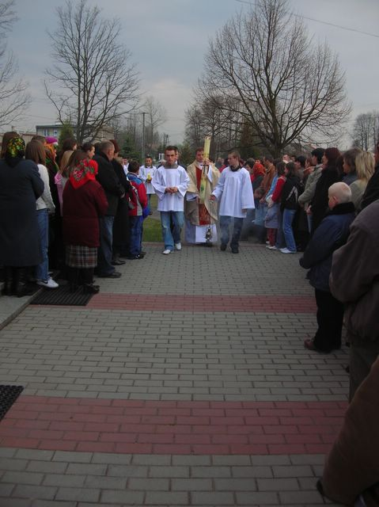

Uroczystości Wielkiej Soboty w kaplicy w Żarówce, 7 kwietnia 2007
Procesja z poświecenia ognia w Żarówce w Wielką Sobotę.
Świece Paschalną niesie ksiądz katecheta Piotr Gwiżdż.
Pierwszy / First |
Poprzedni / Previous |
Następny / Previous |
Ostatni / Last | Miniatury / Thumbnails
